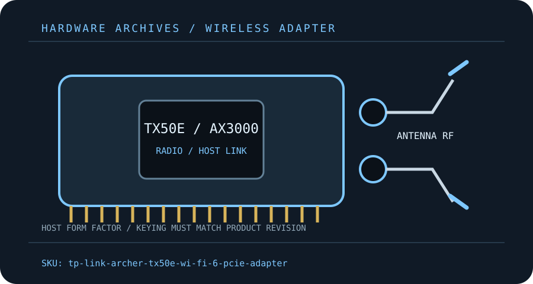

[ MODEL-SPECIFIC M.2 / PCIE WI-FI HARDWARE ]
TP-Link Archer TX50E AX3000 Wi-Fi 6 PCIe Adapter
Two-stream dual-band Wi-Fi 6 desktop adapter; check the printed hardware version because bundled radio/BT details can vary.
IDENTIFICATION: Match the full model, hardware revision, regulatory region and radio-module label before ordering replacements or selecting drivers. Values are manufacturer specifications, not a guaranteed measurement.

Dedicated wireless specifications
| Cataloged product | TP-Link Archer TX50E AX3000 Wi-Fi 6 PCIe Adapter |
|---|---|
| Chipset / radio module | TP-Link does not guarantee one publicly identified silicon part across every TX50E hardware version. Record the board/module label and match its region/revision driver; do not assume AX200 or AX201. |
| Wi-Fi generation / standards | Wi-Fi 6 / IEEE 802.11ax with backward support for 802.11a/b/g/n/ac. |
| Radio bands, channels & width | 2.4 GHz and 5 GHz; nominal AX3000 class (574 + 2,402 Mb/s). 160 MHz support is conditional on AP, driver and allowed channels. |
| Spatial streams / nominal link rates | 2×2 MIMO; figures are maximum PHY rates, not measured payload throughput. |
| Host interface / form factor / keying | PCIe x1 desktop carrier; Bluetooth uses the internal USB 2.0 header cable on supported revisions. |
| Antenna connectors | Two detachable dual-band external antennas on RP-SMA jacks; use the supplied antenna pair and base where included in that revision. |
| Bluetooth | Bluetooth version is hardware-revision dependent (TP-Link offers revision-specific downloads); confirm the exact packaging/module label before applying a Bluetooth version claim. |
| Operating-system / driver compatibility | TP-Link download center selects Windows support by hardware revision and region. Install the matching WLAN and Bluetooth package; do not assume Linux/macOS vendor support. |
| Regulatory and host caveats | TX50E is Wi-Fi 6, not Wi-Fi 6E; it has no 6 GHz support. Driver, Bluetooth generation and regulatory channels can vary by revision/region. Check the version printed on the card and the local TP-Link support selector. The host needs a PCIe slot and, for Bluetooth, a functioning USB header. |
Model-specific installation notes
Install only with the host powered down and follow the manufacturer’s manual for slot, cable, antenna and ESD precautions. Fit and electrical compatibility are separate questions: the host must support the stated interface, firmware and driver for this exact SKU.
Nominal PHY rates vary with channel width, modulation, signal quality, regulatory domain, AP capabilities and concurrent client traffic. They are not measured Internet or application throughput. Confirm local 6 GHz/5 GHz channel permissions before deployment.
Manufacturer sources
- TP-Link Archer TX50E product pageTP-Link product page and datasheet links for AX3000 Wi-Fi 6 capabilities.
- TP-Link Archer TX50E support/downloadsTP-Link revision-selectable manual, driver and support materials.
- TP-Link Archer TX50E datasheet (hardware version 1.0)TP-Link direct manufacturer datasheet for a specific hardware version; later revisions can differ.
Source pages can be regional or revision-specific. Use the exact manufacturer page and package matching the label on the adapter and host.